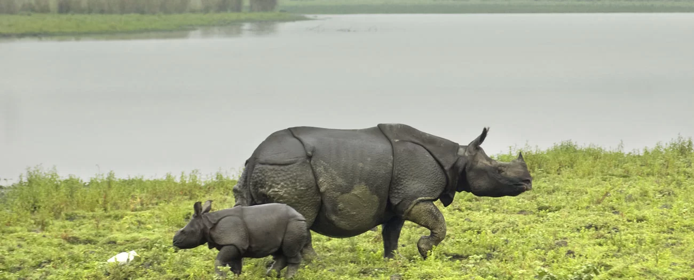

My Trip to Kaziranga National Park
One of the most sought after wildlife holiday destinations in India, Kaziranga National park’s 430 square kilometer area sprinkled with elephant-grass meadows, swampy lagoons, and dense forests is home to more than 2200 Indian one-horned rhinoceros, approximately 2/3rd of their total world population.
Fauna: Due to the difference in altitude between the eastern and western areas of the park, here one can see mainly four types of vegetation’ like alluvial inundated grasslands, alluvial savanna woodlands, tropical moist mixed deciduous forests, and tropical semi-evergreen forests. Kumbhi, Indian gooseberry, the cotton tree, and elephant Apple are amongst the famous trees that can be seen in the park. Also, a good variety of aquatic flora can be seen in lakes, ponds, and along the river shores.
Fauna: The forest region of Kaziranga Park is home to world’s largest population of Indian Rhinoceros. Other animals that can be seen in the elephant grass, marshland and dense tropical moist broadleaf forests of Kaziranga are Hoolock Gibbon, Tiger, Leopard, Indian Elephant, Sloth Bear, Wild water buffalo, swamp deer, etc. With increase in tiger population every year, the government authorities declared Kaziranga as a Tiger Reserve in the year 2006. Also here one can find good number of migratory bird species from Central Asia. The park is home to more than 480 species of birds out of which 25 are globally threatened.
 Facebook
Facebook Instagram
Instagram Pinterest
Pinterest
Comments
Leave a comment